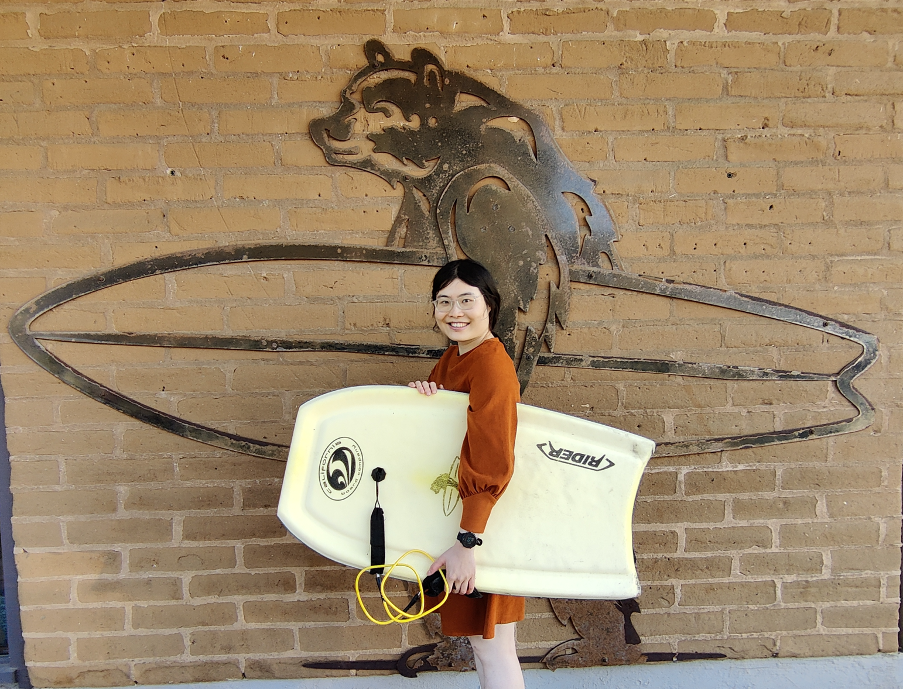

Shuli Chen
I am currently a postdoctoral member at the Institute for Advanced Study, working on geometric analysis.
Previously I was a L. E. Dickson Instrutor at the University of Chicago from
January 2025 to August 2026. Before that I was a Uhlenbeck Postdoctoral Fellow
at the Simons Laufer Mathematical Sciences Institute (SLMath / MSRI) during fall 2024, attending the program
"New Frontiers in Curvature: Flows, General Relativity, Minimal Submanifolds, and Symmetry."
I graduated with a PhD in mathematics from Stanford University in June 2024.
My advisor is Otis Chodosh.
I obtained my Bachelor of Arts degree from Cornell University in May 2018,
and I spent Spring 2017 at the Budapest Semester in Mathematics.
You can reach me by emailing me at shulic AT ias DOT edu.
Research
- Uniformly positive scalar curvature on manifold interiors.
[arXiv:2610.07608]
- Optimal decay constant for complete manifolds of positive scalar curvature with
quadratic decay.
Math. Ann., 95:Paper No. 12, 2026.
[arXiv:2508.04173]
[journal]
- Interior control for surfaces with positive scalar curvature and its application.
Comm. Anal. Geom., 33(8):1865-1887, 2025.
[arXiv:2502.14216]
[journal]
With Jianchun Chu and Jintian Zhu.
- Positive scalar curvature metric and aspherical summands.
Accepted by Duke Math. J.
[arXiv:2312.04698]
With Jianchun Chu and Jintian Zhu.
- Index of minimal hypersurfaces in real projective spaces.
Int. Math. Res. Not. IMRN, 2024(10):8592-8608, 2024.
[arXiv:2301.02932]
[journal]
- A generalization of the Geroch conjecture with arbitrary ends.
Math. Ann., 2023.
[arXiv:2212.10014]
[journal]
- Stable submanifolds in the product of projective spaces II.
Calc. Var., 64(5):145, 2025.
[arXiv:2204.07685]
[journal]
With Alejandra Ramirez-Luna.
- On the index of minimal surfaces with free boundary in a half-space.
J. Geom. Anal., 33(2):46, 2023.
[arXiv:2103.10588]
[journal]
- On the generalized Erdős-Kneser conjecture: Proofs and reductions.
J. Combin. Theory Ser. B, 135:227-237, 2019.
[arXiv:1712.03456]
[journal]
With Jai Aslam, Ethan Coldren, Florian Frick, and Linus Setiabrata.
- Jacobi-Trudi determinants over finite fields.
Ann. Comb., 22(3):447-489, 2018.
[arXiv:1611.00216]
[journal]
With Ben Anzis, Yibo Gao, Jesse Kim, Zhaoqi Li, and Rebecca Patrias.
- Coincidences among skew stable and dual stable Grothendieck polynomials.
Involve, 11(1):143-167, 2017.
[arXiv:1609.06171]
[journal]
With Ethan Alwaise, Alexander Clifton, Rebecca Patrias, Rohil Prasad, Madeline Shinners, and Albert Zheng.
Teaching
Instructor at UChicago
Teaching assistant at Stanford
| Math 51 | |
Linear Algebra, Multivariable Calculus, and Modern Applications |
| |
Winter 2021 |
| Math 53 | |
Differential Equations with Linear Algebra, Fourier Methods, and Modern Applications |
| |
Autumn 2022, Autumn 2023 |
| | I also made widgets for Math 53. Check them out! |
| | Here is a guide to Stanford introductory math courses. |
Course assistant at Stanford
| Math 19 | |
Calculus I |
| |
Autumn 2018 |
| Math 20 | |
Calculus II |
| |
Winter 2020 |
| Math 106 | |
Functions of a Complex Variable |
| |
Winter 2022 |
| Math 107 | |
Graph Theory |
| |
Spring 2019 |
| Math 205A | |
Real Analysis |
| |
Autumn 2020 |
| Math 205B | |
Functional Analysis |
| |
Winter 2023 |
| Math 215C | |
Riemannian Geometry |
| |
Spring 2023, Spring 2024 |
Miscellaneous
I am a fan of comedies, especially Xiangsheng (相声).
Here is a video of me and my friend performing Xiangsheng 对春联 at the 2016 Cornell Spring Festival Gala.
The performance starts about 20 minutes into the video.
Last Updated: 10/15/2026